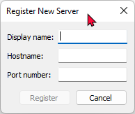
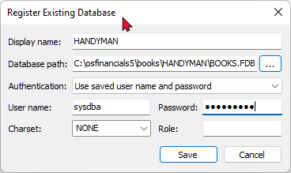
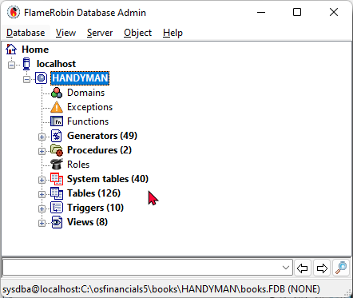
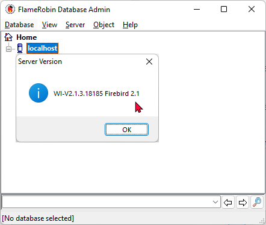

Flame Robin - Firebird connection
FlameRobin and Firebird Databases
To use FlameRobin, you need to have Firebird installed. FlameRobin is a graphical database administration tool specifically designed to work with Firebird databases. It allows users to manage Firebird databases, execute SQL queries, and perform various administrative tasks such as creating and modifying database objects.
FlameRobin interacts with Firebird servers to perform these tasks. Therefore, you must have Firebird installed and running either locally or on a remote server that you can connect to with FlameRobin.
You can download and install Firebird separately from FlameRobin. Once Firebird is installed and configured, you can then install FlameRobin to manage your Firebird databases.
Firebird 2.1 and FlameRobin is included in the installs folder of your osFiinancials 5 installation folder.
Testing the Connection with FlameRobin
|
|
If you experience connection issues with Firebird and FlameReobin, check and allow permissions for these apps in your Windows Firewall settings |

While optional, testing the connection with FlameRobin can serve as a useful diagnostic tool. It's not necessary for osFinancials/TurboCASH to function correctly, but it's handy for verifying database connectivity.
Add a new server if you are on the client machine (you also need the client install of Firebird for this) of just use localhost if flame is running on the server.
- Launch FlameRobin and navigate to the "Home" tab.
- Right-click and select "Register server..." from the context menu.

- Enter the following:
- Display name: - Assign an arbitrary name to recognise the server.
- Hostname: - Enter the IP address or hostname of the server (you can find this using 'ipconfig' in the command prompt).
- Port number: - Leave this field empty (default).
- Right-click the newly added server and choose "Register existing database..." from the context menu.

- Enter the following:
- Display name: - Enter the name you want to use for this particular set of books.
- Database path: - Enter the full server path to the books.fdb file or select a database file on your system.
- Username: - Default is sysdba
- Password: - Default is masterkey.
- Click "Save" and double-click the added database. This will confirm if the database tables are visible.

- You can browse through the tables to view the data of your Set of Books. A successful connection indicates no issues.
Checking the Firebird version with FlameRobin
Firebird 1.5 databases have an ODS (On-Disk Structure) version of 10.1, while Firebird 2.1 databases have an ODS version of 11.1.
To check the Firebird version:
Right-click on the Server name (e.g. "localhost") and select "Retrieve server version" from the context menu or the Server menu.

This process confirms compatibility with Firebird 2.1, which is included in the installs folder of your osFinancials 5 installation. The Firebird databases of the templates for Sets of Books and linked languages, available as a free download, are upgraded to Firebird 2.1 with ODS version 11.1.